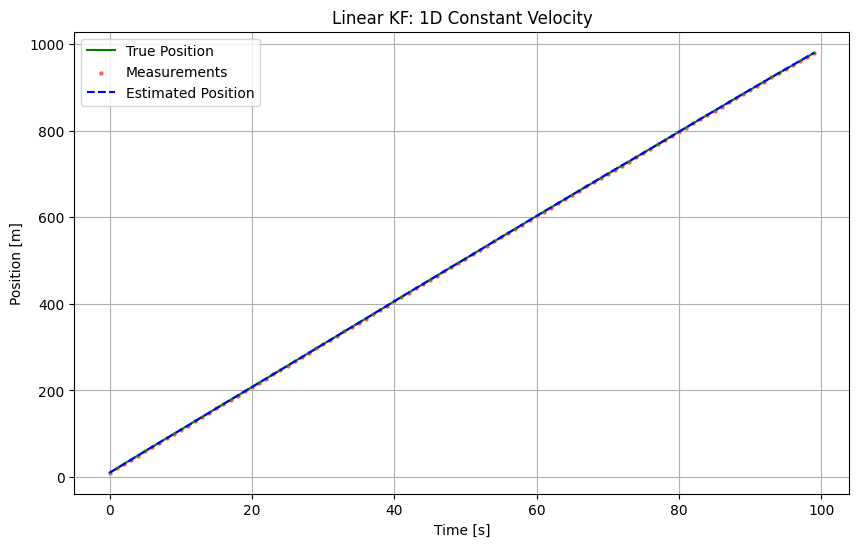
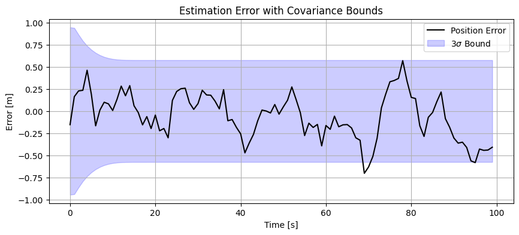

Tutorial 09: Linear Kalman Filter and EKF Setup
This tutorial covers the implementation and setup of Linear Kalman Filters (LKF) and Extended Kalman Filters (EKF) for spacecraft navigation and tracking.
We will demonstrate:
Linear KF: 1D Constant Velocity Tracking (Simple formulation).
Extended KF (EKF): 3D Relative Navigation tracking with ranging devices (Non-linear measurement model).
1. Theory Prerequisite: Linear Kalman Filter
The Linear Kalman Filter estimates the state \(x \in \mathbb{R}^n\) of a discrete-time process governed by the linear stochastic difference equation:
with a measurement \(z \in \mathbb{R}^m\):
Where:
\(F\): State transition matrix
\(B\): Control input matrix
\(H\): Measurement matrix
\(w \sim \mathcal{N}(0, Q)\): Process Noise
\(v \sim \mathcal{N}(0, R)\): Measurement Noise
Predict/Update Cycles
Predict:
\(\hat{x}_{k|k-1} = F \hat{x}_{k-1|k-1} + B u_{k-1}\)
\(P_{k|k-1} = F P_{k-1|k-1} F^T + Q\)
Update:
\(K_k = P_{k|k-1} H^T (H P_{k|k-1} H^T + R)^{-1}\)
\(\hat{x}_{k|k} = \hat{x}_{k|k-1} + K_k (z_k - H \hat{x}_{k|k-1})\)
\(P_{k|k} = (I - K_k H) P_{k|k-1}\)
import numpy as np
import matplotlib.pyplot as plt
from opengnc.kalman_filters.kf import KF
from opengnc.kalman_filters.ekf import EKF
np.random.seed(42) # For reproducible tutorial results
print("Imports successful.")
Imports successful.
1.1 Demonstration: 1D Constant Velocity Tracking
We track a satellite’s relative range along a single axis assuming constant velocity.
dt = 1.0 # Time step [s]
steps = 100
# Initialize Filter
linear_kf = KF(dim_x=2, dim_z=1) # State: [Position, Velocity]
# System Matrices
linear_kf.F = np.array([[1, dt],
[0, 1]])
linear_kf.H = np.array([[1, 0]]) # Measure range only
# Noise and Covariance Setup
linear_kf.R = np.array([[0.1]]) # Measurement Noise Var
linear_kf.Q = np.array([[0.001, 0],
[0, 0.001]]) # Process Noise Var
linear_kf.P *= 10.0 # High initial uncertainty
# True Initial State
true_x = np.array([0.0, 10.0]) # Pos=0m, Vel=10m/s
history_true = []
history_est = []
history_meas = []
history_cov = []
for k in range(steps):
# Step Simulation
process_noise = np.random.multivariate_normal(np.zeros(2), linear_kf.Q)
true_x = np.dot(linear_kf.F, true_x) + process_noise
# Measure
meas_noise = np.random.normal(0, np.sqrt(linear_kf.R[0, 0]))
z = np.dot(linear_kf.H, true_x) + meas_noise
# Filter update
linear_kf.predict()
linear_kf.update(z)
# Save for plotting
history_true.append(true_x.copy())
history_est.append(linear_kf.x.copy())
history_meas.append(z)
history_cov.append(linear_kf.P.diagonal().copy())
history_true = np.array(history_true)
history_est = np.array(history_est)
history_meas = np.array(history_meas)
history_cov = np.array(history_cov)
print("Linear KF run complete.")
Linear KF run complete.
# Plotting Linear KF Results
time = np.arange(steps) * dt
plt.figure(figsize=(10, 6))
plt.plot(time, history_true[:, 0], 'g-', label='True Position')
plt.scatter(time, history_meas, c='r', s=5, alpha=0.5, label='Measurements')
plt.plot(time, history_est[:, 0], 'b--', label='Estimated Position')
plt.title('Linear KF: 1D Constant Velocity')
plt.xlabel('Time [s]')
plt.ylabel('Position [m]')
plt.legend()
plt.grid(True)
plt.show()
plt.figure(figsize=(10, 4))
plt.plot(time, history_true[:, 0] - history_est[:, 0], 'k-', label='Position Error')
plt.fill_between(time, -3*np.sqrt(history_cov[:,0]), 3*np.sqrt(history_cov[:,0]), color='blue', alpha=0.2, label='$3\sigma$ Bound')
plt.title('Estimation Error with Covariance Bounds')
plt.xlabel('Time [s]')
plt.ylabel('Error [m]')
plt.legend()
plt.grid(True)
plt.show()


[!NOTE] Linear KF Performance: Brief, occasional 1-step exceedances of the \(3\sigma\) bounds followed by automatic recovery are normal statistical variances for stochastic filters. \(3\sigma\) encompasses \(99.73\%\) of cases; for 100-step simulations, sparse failures are theoretically consistent with normal noise distribution.
2. Theory Prerequisite: Extended Kalman Filter
For non-linear systems:
We linearize about the current estimate using Taylor series expansion:
Dynamics Jacobian: \(F_{k-1} = \frac{\partial f}{\partial x}\Big|_{\hat{x}_{k-1|k-1}}\)
Measurement Jacobian: \(H_k = \frac{\partial h}{\partial x}\Big|_{\hat{x}_{k|k-1}}\)
The filter cycles proceed identically to the linear case, but use the Jacobian matrices for covariance propagation and the non-linear functions for predicting the state and measurement residuals.